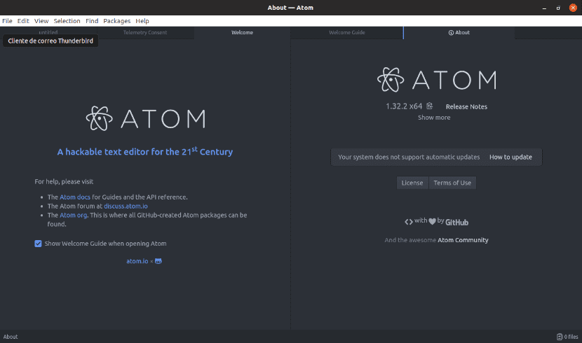

Atom es un editor de código fuente de código abierto para macOS, Linux, y Windows3 con soporte para múltiples plug-in escritos en Node.js y control de versiones Git integrado, desarrollado por GitHub. Atom es una aplicación de escritorio construida utilizando tecnologías web.
Brackets es un editor de texto moderno, ligero pero potente. Combinamos herramientas visuales en el editor para que obtenga la cantidad correcta de ayuda cuando lo desee sin interponerse en su proceso creativo.